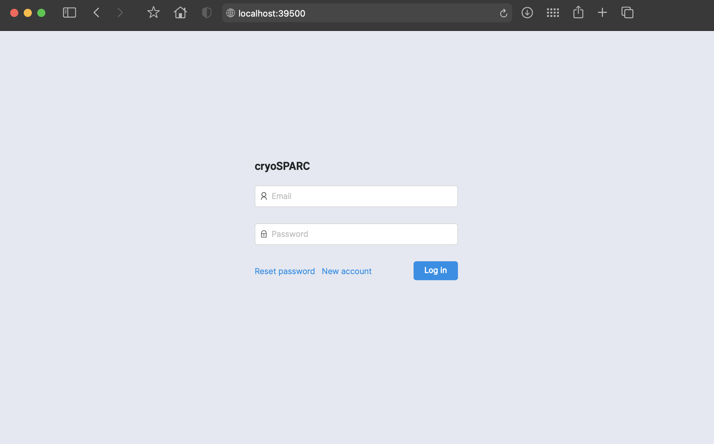
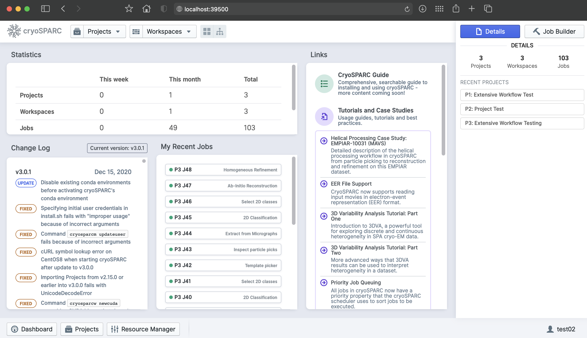
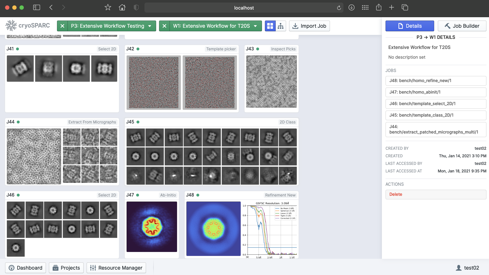
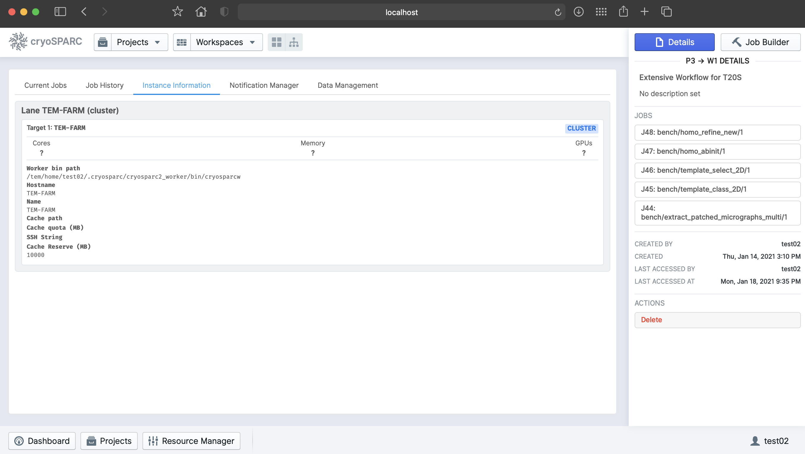
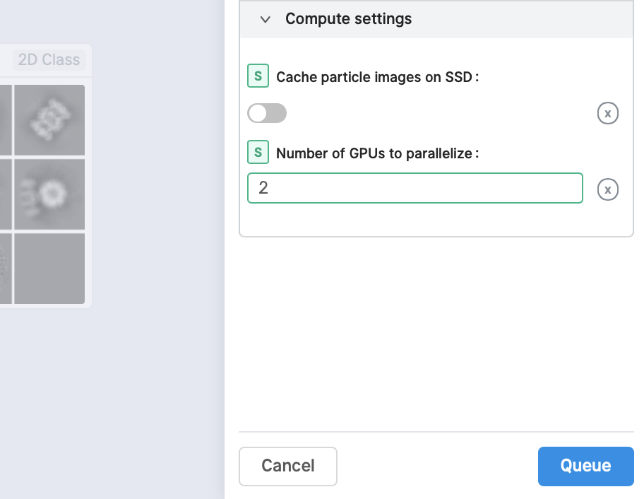

CryoSPARC
CryoSPARC is the state-of-the-art platform used globally for obtaining 3D structural information from single particle cryo-EM data. The cryoSPARC platform enables automated, high quality and high-throughput structure discovery of proteins, viruses and molecular complexes for research and drug discovery.
Note
cryoSPARC offical site : https://cryosparc.com
Note
At the time of writing this document (Jan. 2021), unforturnatelly, cryoSPARC v2.x, v3.x or v4.x does not provide the method of installing a single cryoSPARC instance (consisting of web applcation, command core, and database) for use by a number of users with the complete isolation and security of their project data. This problem might be resolved with later versions of cryoSPARC after CryoSPARC re-designs the product with the concept of “Hub” (as mentioned in cryoSPARC forum https://discuss.cryosparc.com/t/use-linux-user-accounts/3480). In the meanwhile, thus, we had to decide that each group must setup a completely isolated cryoSPARC instance independently within thier own home directories (/tem/scratch/<GroupDir>). This method relies on the UNIX system for security and is more tedious to manage but provides stronger access restrictions for users own dataset. For users convenience, we are ready to install and setup a cryoSPARC instance with administrative automation codes on behalf of users.
Prerequisites
Now, cryoSPARC is available free of charge for academic use. For a completely isolated cryoSPARC instance, user must have their own non-commercial license key for cryoSPARC v4. Please visit the CryoSPARC official site, request a license key and inform the valid key to GSDC TEM service administrator by e-mail.
Getting a cryoSPARC instance
CryoSPARC is a backend and frontend software system that provides data processing and image analysis capabilities for single particle cryo-EM, along with a browser based user interface and command line tools. CryoSPARC is composed of three major components : cryosparc_master, cryospace_database and cryosparc_worker.
cryosparc_master : Master processes (webapps, command_core, databases, etc.) run together on one node (for our case, tem-cs-el7.sdfarm.kr login node). These processes host HTML5 based web applications, spawn or submit jobs to a cluster scheduler (for example, to PBS-based batch system)
cryosparc_worker : Worker process can be spawned on any available worker nodes, and do data processing and image analysis tasks which are pre-defined within cryoSPRAC software packages.
cryosparc_database : CryoSPARC database is built on top of mongoDB, managing the metadata of users workflows, projects, jobs, backend clusters or workers as well as users.
1. (Admin) Install and setup a cryoSPARC instance
On behalf of users, administrator can execute ansible configuration automation code-snippets to install and setup a cryoSPARC instance, using a given valid license key. Master, worker and database sub-packages will be installed during configuration automation, which are located in /tem/scratch/<GroupDir>/.cryosparc after finishing setup. A setup procedure includes registering both cluster(lane or worker nodes) instance and webapp’s admin/normal users account. The whole setup will take about 10 minutes.
After finishing installation, /tem/scratch/<GroupDir>/.cryosparc has following directories/files structure:
tem-cs-el7.sdfarm.kr $> cd ~/.cryosparc
tem-cs-el7.sdfarm.kr $> tree -L 1 ./
.
├─ cluster_info.json ## cluster(lane) information to register
├─ cluster_script.sh ## PBS script template to submit jobs to worker cluster(lane)
├─ cryosparc2_worker ## dummy directory
├─ cryosparc_master ## cryosparc_master package install path
├─ cryosparc_master.tar.gz
├─ cryosparc_worker ## cryosparc_worker package install path
├─ cryosparc_worker.tar.gz
└─ cryosparc_database ## cryosparc_database package install path
Warning
!! CAUTION !! DO NOT delete or modify cryoSPARC instance base directory, /tem/scratch/<GroupDir>/.cryosparc. The cryoSPARC base directory contains database. If this directory is deleted, all the project, job and workflow information will be corrupted and lost.
Also, the configuration code-snippets implicitly add cryoSPARC instance’s binary path to PATH environment variable.
tem-cs-el7.sdfarm.kr $> cat /tem/home/<UserID>/.bashrc
...
# User specific aliases and functions
export PATH='/tem/scratch/<GroupDir>/.cryosparc/cryosparc_master/bin':$PATH
2. (User) Verifying installation
By default, master processes (webapp, command_core, database, etc.) are automatilly started during configuration automation. Users should check and verify whether the master processes are working correctly on tem-cs-el7.sdfarm.kr login node or not.
Checking environment variables for cryoSPARC instance
tem-cs-el7.sdfarm.kr $> cryosparcm env
export "CRYOSPARC_HTTP_PORT=39xxx"
export "CRYOSPARC_MASTER_HOSTNAME=tem-cs-el7.sdfarm.kr"
export "CRYOSPARC_CLICK_WRAP=true"
export "CRYOSPARC_COMMAND_VIS_PORT=39xxx"
export "CRYOSPARC_CONDA_ENV=cryosparc_master_env"
export "CRYOSPARC_FORCE_USER=false"
export "CRYOSPARC_INSECURE=true"
export "CRYOSPARC_DEVELOP=false"
export "CRYOSPARC_DB_PATH=/tem/scratch/<GroupDir>/.cryosparc/cryosparc_database"
export "CRYOSPARC_HTTP_RTP_PORT=39xxx"
export "CRYOSPARC_LICENSE_ID=<license_key>"
export "CRYOSPARC_HOSTNAME_CHECK=tem-cs-el7.sdfarm.kr"
export "CRYOSPARC_MONGO_PORT=39xxx"
export "CRYOSPARC_MONGO_CACHE_GB=4"
export "CRYOSPARC_HEARTBEAT_SECONDS=60"
export "CRYOSPARC_ROOT_DIR=/tem/scratch/<GroupDir>/.cryosparc/cryosparc_master"
export "CRYOSPARC_HTTP_RTP_LEGACY_PORT=39xxx"
export "CRYOSPARC_COMMAND_CORE_PORT=39xxx"
export "CRYOSPARC_BASE_PORT=39000"
export "CRYOSPARC_PATH=/tem/scratch/<GroupDir>/.cryosparc/cryosparc_master/deps/external/mongodb/bin:/tem/scratch/<GroupDir>/.cryosparc/cryosparc_master/bin"
export "CRYOSPARC_LIVE_ENABLED=true"
export "CRYOSPARC_COMMAND_RTP_PORT=39xxx"
export "CRYOSPARC_SUPERVISOR_SOCK_FILE=/tmp/cryosparc-supervisor-627a9991e2f2f069094732dfd78d1696.sock"
export "CRYOSPARC_LD_LIBRARY_PATH=/tem/scratch/<GroupDir>/.cryosparc/cryosparc_master/cryosparc_compute/blobio"
export "CRYOSPARC_FORCE_HOSTNAME=false"
export "PATH=/tem/scratch/<GroupDir>/.cryosparc/cryosparc_master/deps/external/mongodb/bin:/tem/scratch/<GroupDir>/.cryosparc/cryosparc_master/bin:/tem/scratch/<GroupDir>/.cryosparc/cryosparc_master/deps/anaconda/envs/cryosparc_master_env/bin:/tem/scratch/<GroupDir>/.cryosparc/cryosparc_master/deps/anaconda/condabin:/tem/scratch/<GroupDir>/.cryosparc/cryosparc_master/bin:/usr/local/torquex/bin:/usr/local/torquex/sbin:/usr/local/torquex/bin:/usr/local/torquex/sbin:/tem/el7/Modules/bin:/usr/local/bin:/bin:/usr/bin:/usr/local/sbin:/usr/sbin:/tem/home/<userid>/bin"
export "LD_LIBRARY_PATH=/tem/scratch/<GroupDir>/.cryosparc/cryosparc_master/cryosparc_compute/blobio:"
export "LD_PRELOAD="
export "PYTHONPATH=/tem/scratch/<GroupDir>/.cryosparc/cryosparc_master"
export "PYTHONNOUSERSITE=true"
export "CONDA_SHLVL=1"
export "CONDA_PROMPT_MODIFIER=(cryosparc_master_env)"
export "CONDA_EXE=/tem/scratch/<GroupDir>/.cryosparc/cryosparc_master/deps/anaconda/bin/conda"
export "CONDA_PREFIX=/tem/scratch/<GroupDir>/.cryosparc/cryosparc_master/deps/anaconda/envs/cryosparc_master_env"
export "CONDA_PYTHON_EXE=/tem/scratch/<GroupDir>/.cryosparc/cryosparc_master/deps/anaconda/bin/python"
export "CONDA_DEFAULT_ENV=cryosparc_master_env"
You can find what kinds of environment variables have been set for the cryoSPARC instance.
Note
Especially, user should check CRYOSPARC_BASE_PORT (above, for example, 39000), which is the listening port of cryoSPARC web application. Later, this port number is used to make SSH tunneling between client and tem-cs-el7.sdfarm.kr login node. Via the tunneled connection over SSH, users can access the web UI of cryoSPARC instance.
Checking the status of cryoSPARC instance
tem-cs-el7.sdfarm.kr $> cryosparcm status
----------------------------------------------------------------------------
CryoSPARC System master node installed at
/tem/scratch/<GroudID>/.cryosparc/cryosparc_master
Current cryoSPARC version: v4.0.0
----------------------------------------------------------------------------
CryoSPARC process status:
app RUNNING pid 14307, uptime 0:00:09
app_api RUNNING pid 14317, uptime 0:00:08
app_api_dev STOPPED Not started
app_legacy STOPPED Not started
app_legacy_dev STOPPED Not started
command_core RUNNING pid 14153, uptime 0:00:40
command_rtp RUNNING pid 14247, uptime 0:00:26
command_vis RUNNING pid 14240, uptime 0:00:27
database RUNNING pid 14035, uptime 0:00:44
----------------------------------------------------------------------------
License is valid
----------------------------------------------------------------------------
global config variables:
export CRYOSPARC_LICENSE_ID="<license_key>"
export CRYOSPARC_MASTER_HOSTNAME="tem-cs-el7.sdfarm.kr"
export CRYOSPARC_DB_PATH="/tem/scratch/<GroupDir>/.cryosparc/cryosparc_database"
export CRYOSPARC_BASE_PORT=39xxx
export CRYOSPARC_DB_CONNECTION_TIMEOUT_MS=20000
export CRYOSPARC_INSECURE=true
export CRYOSPARC_DB_ENABLE_AUTH=true
export CRYOSPARC_CLUSTER_JOB_MONITOR_INTERVAL=10
export CRYOSPARC_CLUSTER_JOB_MONITOR_MAX_RETRIES=1000000
export CRYOSPARC_PROJECT_DIR_PREFIX='CS-'
export CRYOSPARC_DEVELOP=false
export CRYOSPARC_CLICK_WRAP=true
Launching CryoSPARC instance
We assume that user’s network setup looks like (most commonly used scenario):
internet
[ localhost ]==============[ firewall | tem-cs-el7.sdfarm.kr ]
For Linux/Mac users
With the following command, you can start an SSH tunnel to export CRYOSPARC_BASE_PORT from tem-cs-el7.sdfarm.kr to your local client machine.
localhost $> ssh -N -f -L localhost:39500:tem-cs-el7.sdfarm.kr:<CRYOSPARC_BASE_PORT> -o Port=<ssh_port> <userid>@tem-cs-el7.sdfarm.kr
## 39500 port on localhost : assume that the port number 39500 is available on your localhost. Otherwise, you can use another port available.
## -N : Do not execute a remote command. This is useful option for just forwarding ports.
## -f : Requests ssh to go to background just before command execution.
## -L [bind_address:]port:host:hostport
Note
You should execute this ‘ssh’ command on YOUR LOCAL PC/WORKSTATION to make a tunnel between your local machine and tem-cs-el7.sdfarm.kr (localhost:39500 <–> tem-cs-el7.sdfarm.kr:<CRYOSPARC_BASE_PORT>) over secure channel.
Note
You can close the terminal window (because ‘ssh’ will be run in the background) after running the above command. The tunnel will stay open.
Now, open your browser (Chrome/Firefox/Safari recommended) and navigate to http://localhost:39500. You should be presented with the cryoSPARC login page.
For Windows users
Using MobaXterm
Open ‘MobaXterm’ application.
‘MobaXterm’ -> ‘Tools’ -> ‘MobaSSHTunnel (port forwarding)’ : Open MobaSSHTunnel dialog box.
‘New SSH tunnel’ : Set a forwarded port binding option and save the setting.
Give the name to the saved port forwarding settings, and start the tunnel connection.
Note
You must use CRYOSPARC_BASE_PORT for the ‘Remote server’ port section.
{kind=link}
Now, open your browser (Chrome/Firefox/Safari recommended) and navigate to http://localhost:39500. You should be presented with the cryoSPARC login page.
Using Putty
Open ‘PuTTy Configuration’ dialog box.
‘PuTTy Configuration’ -> ‘Session’ : Load a SSH session to connect tem-cs-el7.sdfarm.kr login node with the known <ssh_port>.
‘PuTTy Configuration’ -> ‘Connection’ -> ‘SSH’ -> ‘Tunnels’ : Set a forwarded port binding option and add the entry.
Note
You must use tem-cs-el7.sdfarm.kr:CRYOSPARC_BASE_PORT for the ‘Destination’ field.
{kind=link}
Now, open your browser (Chrome/Firefox/Safari recommended) and navigate to http://localhost:39500. You should be presented with the cryoSPARC login page.
Exploring CryoSPARC web apps
CryoSPARC login
E-mail and password information will be notified to users as the installation and setup is finished. Given e-mail and password, users can login to cryoSPARC web interfaces.
{kind=link}
CryoSPARC dashboard
{kind=link}
CryoSPARC project
{kind=link}
CryoSPARC cluster(lane)
{kind=link}
Note
For details on user interface and usages of cryoSPARC, refer to cryoSPARC’s official document. https://cryosparc.com/docs/reference/general
Tutorial on processing T20S
Please refer to CryoSPARC’s webpage for the tutorial on processing T20S : https://cryosparc.com/docs/tutorials/t20s
Trouble shooting
1. How to stop or start the cryoSPARC instance?
Stop the running cryoSPRAC instance
tem-cs-el7.sdfarm.kr $> cryosparcm stop
CryoSPARC is running.
Stopping cryoSPARC
app: stopped
command_core: stopped
command_rtp: stopped
command_vis: stopped
liveapp: stopped
webapp: stopped
database: stopped
Shut down
Stop the cryosparc instance if running. This will gracefully kill all the master processes, and will cause any running jobs (potentially on other nodes) to fail.
Start the cryoSPARC instance
tem-cs-el7.sdfarm.kr $> cryosparcm start
Starting cryoSPARC System master process..
CryoSPARC is not already running.
configuring database
configuration complete
database: started
database configuration is OK.
command_core: started
command_core connection succeeded
command_core startup successful
command_vis: started
command_rtp: started
command_rtp connection succeeded
command_rtp startup successful
app: started
app_api: started
-----------------------------------------------------
CryoSPARC master started.
From this machine, access cryoSPARC and cryoSPARC Live at
http://localhost:39xxx
From other machines on the network, access cryoSPARC and cryoSPARC Live at
http://tem-cs-el7.sdfarm.kr:39xxx
Startup can take several minutes. Point your browser to the address
and refresh until you see the cryoSPARC web interface.
Start the cryosparc instance if stopped. This will cause the database, command, webapp etc processes to start up. Once these processes are started, they are run in the background, so the current shell can be closed and the web UI will continue to run, as will jobs that are spawned.
2. How to reset the password of non-admin user?
Users can reset the non-admin user’s password to a new password with the following command-line execution:
tem-cs-el7.sdfarm.kr $> cryosparcm resetpassword --email <email address> --password <newpassword>
3. Job (or Workflow) failed caused by SSD caching
Job failure log looks like:
[CPU: 166.4 MB] Traceback (most recent call last):
File "cryosparc2_worker/cryosparc2_compute/run.py", line 82, in cryosparc2_compute.run.main
File "cryosparc2_worker/cryosparc2_compute/jobs/class2D/run.py", line 64, in cryosparc2_compute.jobs.class2D.run.run_class_2D
File "cryosparc2_compute/particles.py", line 61, in read_blobs
u_blob_paths = cache.download_and_return_cache_paths(u_rel_paths)
File "cryosparc2_compute/jobs/cache.py", line 129, in download_and_return_cache_paths
other_instance_ids = get_other_instance_ids(instance_id, ssd_cache_path)
File "cryosparc2_compute/jobs/cache.py", line 250, in get_other_instance_ids
all_instance_ids = [p for p in os.listdir(ssd_cache_path) if os.path.isdir(os.path.join(ssd_cache_path, p)) and p.startswith('instance_')]
OSError: [Errno 2] No such file or directory: ''
During cryoSPARC configuration, we did not provide an option to support any SSD caching due to the lack of SSD (or NVMe SSD) drives on the worker nodes. However, by default, cryoSPARC seems to have ‘SSD caching’ enabled on its Web user interface. When you are running jobs that process particles (for example: Ab-Initio, Homogeneous Refinement, 2D Classification, 3D Variability), you will find a parameter at the bottom of the job builder under “Compute Settings” called Cache particle images on SSD. Turn this option off to load raw data from their original location instead.
Also, you can set a default parameter value of each project. By default, the Cache particle images on SSD parameter is always on for every job you build, but if you’d like to keep this option off across all jobs in a project, you can set a project-level default by running the following command in a shell on the UI node:
tem-cs-el7.sdfarm.kr $> cryosparcm cli "set_project_param_default('PX', 'compute_use_ssd', False)"
where ‘PX’ is the Project ID you want to set the default value for (e.g., ‘P1’, ‘P2’, etc.)
You can undo this setting by running:
tem-cs-el7.sdfarm.kr $> cryosparcm cli "unset_project_param_default('PX', 'compute_use_ssd')"
4. Failed to launch! 190
As you submit a cryoSPARC job to TEM-FARM cluster, you can encounter an error such as “Failed to launch! 190”. If you face with this error, you should check Number of GPUs to parallelize option under “Compute Setttings” of job builder first. Unlike relion, it seems that all the cryoSPARC jobs can not distribute their worker processes onto multiple worker nodes (that is, all the cryoSPARC job is executed on a single CPU or GPU node). So, the maximum number of GPUs which can be used to parallelize within a job is 2 (because there are 2 P100 or P40 GPUs on each GPU node in GSDC TEM FARM).
{kind=link}
5. Binary locations of Gctf, MotionCor2
The GPU environment of GSDC TEM farm is built on top of NVIDIA CUDA SDK (driver version 460.27.04 and CUDA library version 9.2). Some 3rd-party applications with GPU acceleration, for example, Gctf, MotionCor2, which can be utilized within various number of Cryo-EM toolkit are provided, and you can find those binaries in the following locations:
## Gctf
$> module avail
------------------------------------------------ /tem/el7/Modules/apps ------------------------------------------------
apps/cistem/1.0.0 apps/relion/cpu/3.0.7 apps/relion/cpu/3.1.0 apps/relion/gpu/3.0.7 apps/relion/gpu/3.1.0
-------------------------------------------- /tem/el7/Modules/acceleration --------------------------------------------
cuda/9.2
------------------------------------------------ /tem/el7/Modules/mpi -------------------------------------------------
mpi/gcc/openmpi/4.0.3
--------------------------------------------- /tem/el7/Modules/virtualenv ---------------------------------------------
conda/2020.11
----------------------------------------------- /tem/el7/Modules/tools ------------------------------------------------
tools/ctffind/4.1.14 tools/motioncor2/1.3.1 tools/summovie/1.0.2
tools/gctf/1.18_b2 tools/resmap/1.1.4 tools/unblur/1.0.2
$> module show tools/gctf/1.18_b2
-------------------------------------------------------------------
/tem/el7/Modules/tools/tools/gctf/1.18_b2:
module-whatis {Setup gctf v1.18_b2}
module load cuda/9.2
prepend-path PATH /tem/el7/Gctf_v1.18_b2/bin
conflict tools/gctf
-------------------------------------------------------------------
$> ls -al /tem/el7/Gctf_v1.18_b2/bin
total 63122
drwxr-xr-x. 2 tem tem 462 Apr 9 2020 .
drwxr-xr-x. 4 tem tem 42 Apr 9 2020 ..
-rwxr-xr-x. 1 tem tem 3429036 Aug 22 2018 Gctf_v1.18_b2_sm60_cu8.0
-rwxr-xr-x. 1 tem tem 3520460 Aug 22 2018 Gctf_v1.18_b2_sm60_cu9.0
-rwxr-xr-x. 1 tem tem 3674669 Aug 22 2018 Gctf_v1.18_b2_sm60_cu9.2 # (compatible)
-rwxr-xr-x. 1 tem tem 3429036 Aug 22 2018 Gctf_v1.18_b2_sm61_cu8.0
-rwxr-xr-x. 1 tem tem 3520460 Aug 22 2018 Gctf_v1.18_b2_sm61_cu9.0
-rwxr-xr-x. 1 tem tem 3674669 Aug 22 2018 Gctf_v1.18_b2_sm61_cu9.2 # (compatible)
-rwxr-xr-x. 1 tem tem 3429036 Aug 22 2018 Gctf_v1.18_b2_sm62_cu8.0
-rwxr-xr-x. 1 tem tem 6224329 Aug 22 2018 Gctf_v1.18_b2_sm62_cu9.0
-rwxr-xr-x. 1 tem tem 6373822 Aug 22 2018 Gctf_v1.18_b2_sm62_cu9.2 # (compatible)
-rwxr-xr-x. 1 tem tem 3959148 Aug 22 2018 Gctf_v1.18_b2_sm70_cu9.0
-rwxr-xr-x. 1 tem tem 4117037 Aug 22 2018 Gctf_v1.18_b2_sm70_cu9.2
## MotionCor2
$> module show tools/motioncor2/1.3.1
-------------------------------------------------------------------
/tem/el7/Modules/tools/tools/motioncor2/1.3.1:
module-whatis {Setup motioncor2 1.3.1}
module load cuda/9.2
prepend-path PATH /tem/el7/MotionCor2_v1.3.1
conflict tools/motioncor2
-------------------------------------------------------------------
$> ls -al /tem/el7/MotionCor2_v1.3.1
total 24840
drwxr-xr-x. 2 tem tem 182 Oct 27 00:34 .
drwxr-xr-x. 15 tem tem 653 Jan 15 17:51 ..
-rwxr-xr-x. 1 tem tem 10200208 Oct 23 2019 MotionCor2-UserManual-10-22-2019.pdf
-rwxr-xr-x. 1 tem tem 2712344 Jan 24 2020 MotionCor2_v1.3.1-Cuda101
-rwxr-xr-x. 1 tem tem 2696304 Jan 24 2020 MotionCor2_v1.3.1-Cuda102
-rwxr-xr-x. 1 tem tem 2712312 Jan 24 2020 MotionCor2_v1.3.1-Cuda92 # (compatible)